Things to Order — Design Handoff
An Android app that surfaces a running "things to order" list at three moments: first-time onboarding, a home-screen widget, and a pop-up when the user opens a quick-commerce app (Blinkit, Zepto, etc.). This package covers the home-screen widget, the quick-commerce pop-up, the onboarding flow, and the underlying design system.
Fidelity
High-fidelity. Colors, type, spacing, copy, and states below are final and should be matched closely. Where noted "placeholder," real assets are still pending from the design owner.
1. Design tokens
Full interactive reference: Things to Order - Style Guide.dc.html (open in a browser).
Color
#171717#FFFFFF#F5F2EC#DDD8CC#8A8578#6E6B64#FF5E1A#FFE3D2Rule: 90%+ of any screen is ink-on-paper (black/white/gray). Orange marks exactly one action, number, or emphasis point per screen — never a full background or more than one accent at a time.
Typography
| Role | Font | Weight | Size |
|---|---|---|---|
| Display / headline | Bricolage Grotesque | 800 | 28–44px |
| Screen title | Bricolage Grotesque | 700–800 | 17–22px |
| Body | Inter | 500 | 14–16px |
| Body small / list item | Inter | 400 | 12–14px |
| Caption / label | Inter | 600 | 11–12px, uppercase, 0.06em tracking |
Google Fonts: Bricolage Grotesque (opsz,wght axis) + Inter (400/500/600/700).
Spacing scale
4, 8, 12, 16, 24, 32, 48, 64 px
Radius scale
sm 6px · md 14px · lg 22px · pill 999px
Core components
- Buttons: primary orange fill (#FF5E1A, black text), secondary black fill (white text), outline (1.5px black border), disabled (1.5px #DDD8CC border, gray fill/text)
- Checkbox: 1.6px black square outline (unchecked); solid black fill + white checkmark (checked); checked label gets strikethrough + gray text
- Add-item row: dashed top border (1px #DDD8CC) + "+ [action]" in orange
- Minimized pill: black fill, white text, 999px radius
- Card shell: white fill, 18px radius, 1px #DDD8CC border, soft shadow
0 8px 24px rgba(23,23,23,0.08)
2. Home-screen widget — "Things to Order"
Locked variant: Notepad (1a) Android widget, 4×2 grid cell. Minimized = 4×1 pill; maximized = 4×2 with the list scrolling inside. Tapping "+ jot something" opens the app (no inline text entry in the widget itself). A secondary maximized layout ("light 1c") is also locked as an alternate treatment — dark-ink card inverted to a white/outlined card, same content.
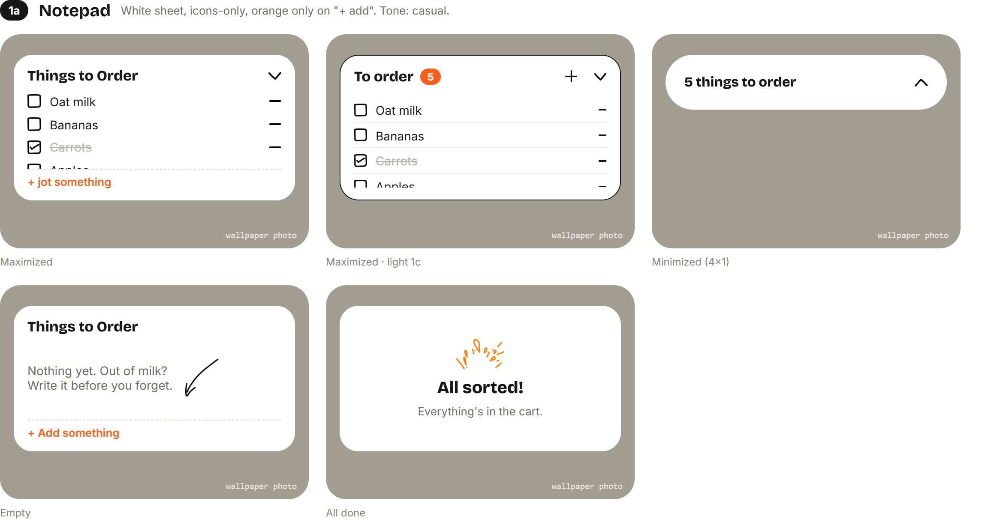
States
| State | Spec |
|---|---|
| Maximized | White card, 22px radius. Header: "Things to Order" (Bricolage 800, 17px) + chevron (▲, points up to indicate collapse). List rows: 16px checkbox + item name (Inter 500, 14px) + flat minus-line icon (subtract/remove), right-aligned. List scrolls if >4 items. Footer row: dashed top border, "+ jot something" in orange. |
| Maximized · light 1c | Same white card, 1.5px black border. Header row: "To order" title + orange pill badge with count + plus icon + chevron, gap 8px between plus and chevron. Extra top margin (14px) between header and first row. Rows separated by 1px #EDEAE1 lines, each ending in the same flat minus-line icon. |
| Minimized | Black pill, white "N things to order" text, chevron rotated 180° (points down, to expand). |
| Empty | Header + a hand-drawn arrow doodle pointing at empty space + one line of copy ("Nothing yet. Out of milk? Write it before you forget.") + same "+ jot something" footer. |
| All done | Confetti mark centered, "All sorted!" (Bricolage 800, 20px), "Everything's in the cart." (gray, 13px). |
Live reference (scroll to variant 1a): Home Widget Variations.dc.html#1a
3. Quick-commerce pop-up
Locked variant: Tag stack (2b) Triggers the instant a connected quick-commerce app opens. Floats non-blocking over the app (doesn't dim/block interaction underneath) until the user minimizes it or clears every item. Items render as wrapping name-only tag chips — tap a chip to copy its name (for pasting into that app's search) and it drops out of the stack. Host-app screenshot behind it is the user's real Blinkit screenshot, cropped to fill, full brightness, no scrim.
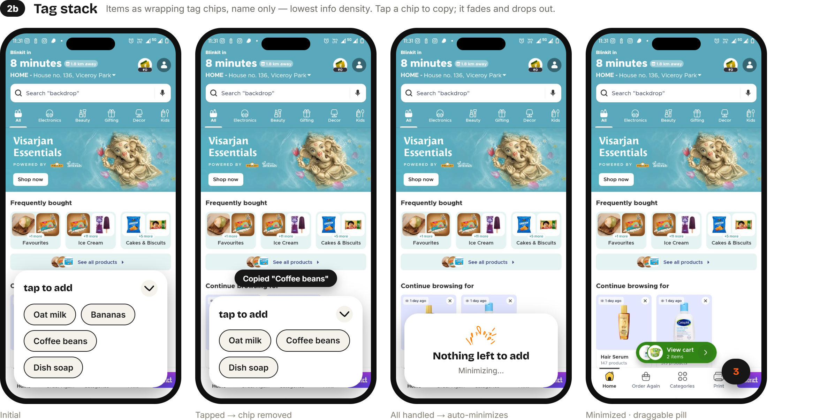
States
| State | Spec |
|---|---|
| Initial | White rounded card (20px radius) bottom-anchored, 12px inset from screen edges. Header "tap to add" + circular chevron button (▼, points down = minimize). Chips: #F5F2EC fill, 1.4px black border, 999px radius, 12px/600 text. |
| Tapped → copied | Small black toast pill above the card: Copied "[item]". The tapped chip is removed from the wrap. |
| All handled | Card collapses to a centered message: confetti mark + "Nothing left to add" + "Minimizing…" — then auto-transitions to minimized. |
| Minimized | Small black circular pill, bottom-right corner, draggable, shows remaining count in orange. |
Live reference (scroll to variant 2b): Quick Commerce Popup Variations.dc.html#2b
4. Onboarding flow
Locked style: Sketchbook (1a) 8 screens, no global skip — each optional screen has its own "Not now" beneath an action-specific primary button (which is disabled/gray until the screen's required input is given). Progress shown as an 8-dot bar (active dot pill-shaped, 18×6px; passed dots solid black; upcoming dots #DDD8CC).
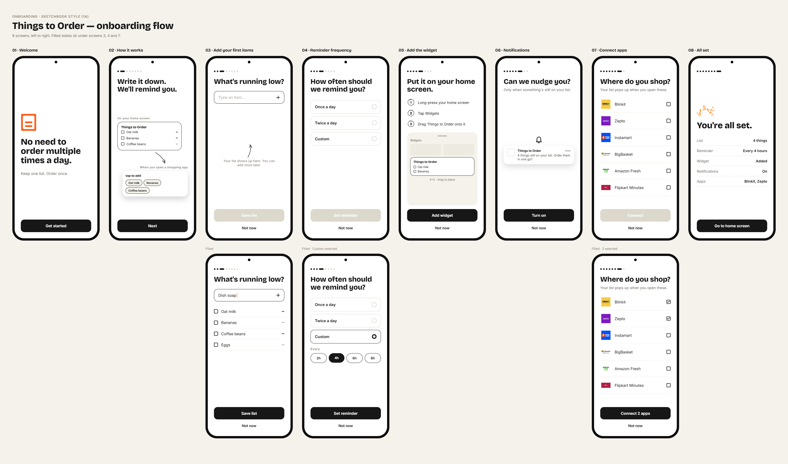
Screen-by-screen
01 · Welcome
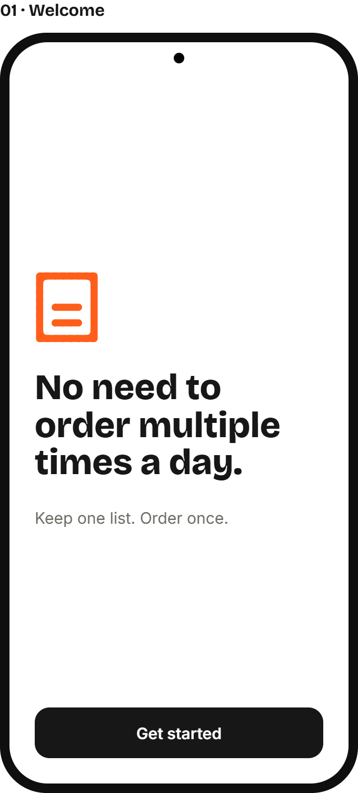
Logo (orange, assets/logo-orange.svg, ~86×96px) · Headline "No need to order multiple times a day." (Bricolage 800, 34px) · Subhead "Keep one list. Order once." (gray, 15px) · Primary button "Get started" (no "Not now" — required first screen).
02 · How it works
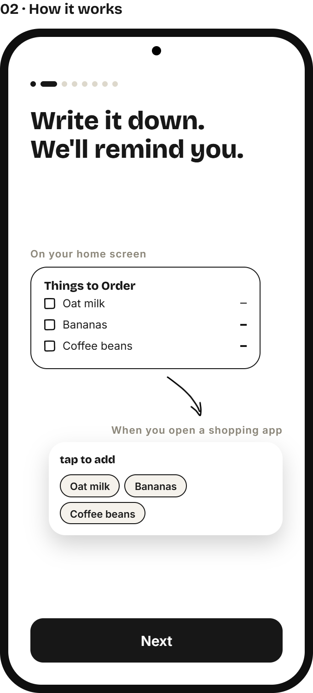
Headline "Write it down.
We'll remind you." Two stacked cards: the real widget card ("On your home screen" label above it) and the real pop-up card ("When you open a shopping app" label above it), linked by a hand-drawn arrow doodle pointing from the first down to the second. Primary button "Next".
03 · Add your first items
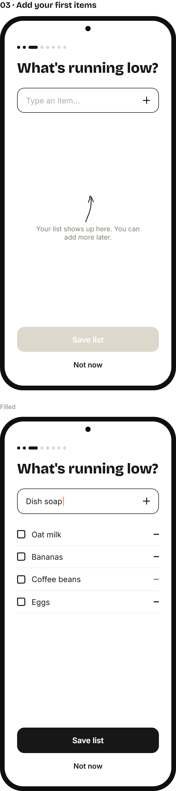
Default: text input (border 1.5px black, 14px radius) with placeholder "Type an item…" + plus icon; empty-state arrow doodle + "Your list shows up here. You can add more later."; primary button "Save list" (disabled/gray). Filled: input shows typed text with an orange text-cursor mark; below it, added items render as full checkbox rows (16px checkbox, 15px text, minus-line icon), separated by 1px lines; primary button turns solid black "Save list" once ≥1 item exists. "Not now" beneath in both states.
04 · Reminder frequency
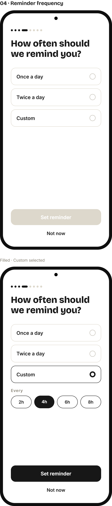
Headline "How often should we remind you?" Three radio rows: Once a day / Twice a day / Custom (16px pill-outline box, 1.5px border; selected = black border + filled black radio dot). Custom selected reveals an "Every" label + 4 hour chips (2h/4h/6h/8h, pill shape, selected chip solid black). Primary button "Set reminder" (disabled until a frequency is picked).
05 · Add the widget
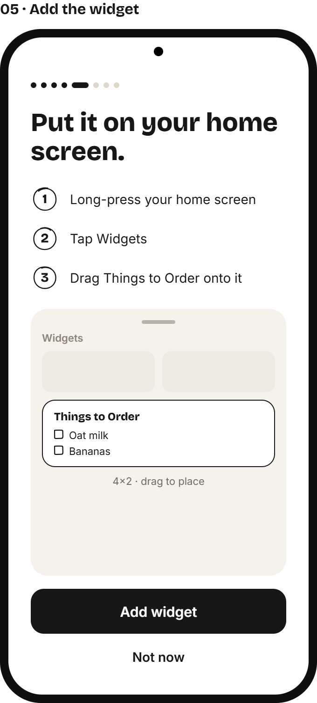
Headline "Put it on your home screen." Three numbered steps (each number sits inside a hand-drawn circle mark — three distinct hand-drawn SVG circles, assets/marks/step-circle-1/2/3.svg, black stroke, no fill): 1 "Long-press your home screen," 2 "Tap Widgets," 3 "Drag Things to Order onto it." Below: a mock Android widget tray (off-white sheet, drag handle, "Widgets" label, generic widget placeholders + our widget card highlighted with a hand-drawn circle mark) + caption "4×2 · drag to place." Primary button "Add widget", "Not now" beneath.
06 · Notifications
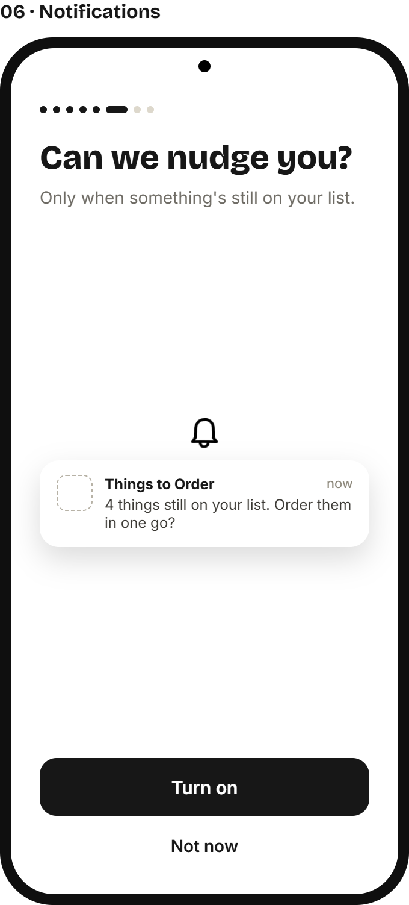
Headline "Can we nudge you?" + subhead "Only when something's still on your list." Bell icon + a sample notification card (app icon placeholder, "Things to Order" title, "now" timestamp, body "4 things still on your list. Order them in one go?"). This is the app's own pre-prompt only — the native Android permission dialog is not depicted; trigger it after this screen's primary action. Primary button "Turn on", "Not now" beneath.
07 · Connect quick-commerce apps
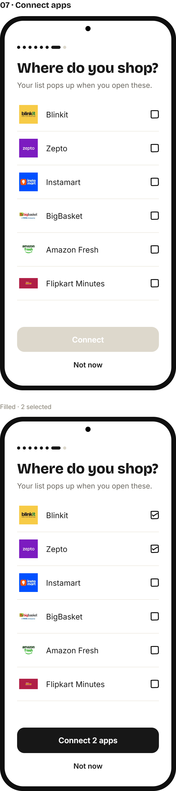
Headline "Where do you shop?" + subhead "Your list pops up when you open these." List of 6 apps, each row: 44×44px white square logo box (no border, object-fit:contain, real logos in assets/logos/) + app name (15px) + checkbox icon. Apps in order: Blinkit, Zepto, Instamart, BigBasket, Amazon Fresh, Flipkart Minutes. Filled state shows 2 checked; primary button label updates to "Connect 2 apps" (disabled/gray "Connect" when none selected). "Not now" beneath.
08 · All set
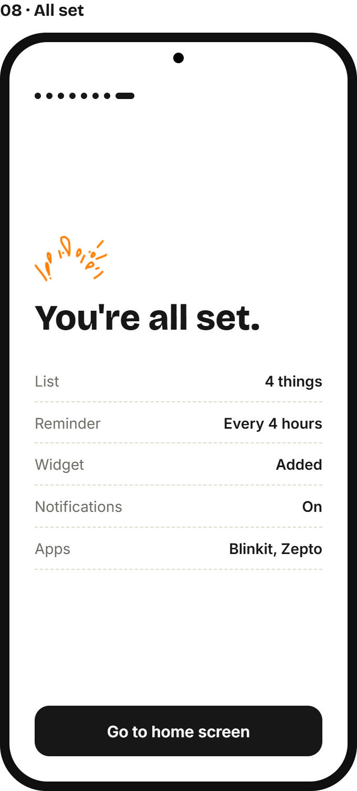
Confetti mark, "You're all set." (Bricolage 800, 34px), then a dashed-divider summary list of what was configured (List: N things · Reminder: frequency · Widget: Added · Notifications: On/Off · Apps: names). Single button "Go to home screen" (no "Not now" — terminal screen).
Live reference (full flow): Onboarding Flow.dc.html
5. Interactions & behavior summary
- Widget tap targets: chevron toggles minimize/maximize; tapping a checkbox strikes the item through and grays it; tapping the minus-line icon removes the item from the list; "+ jot something" / "+ add" opens the app (no inline widget text entry).
- Pop-up lifecycle: appears the instant a connected quick-commerce app opens → floats non-blocking → tapping a chip copies its name to clipboard and removes the chip → once all chips are cleared, shows a brief "done" message then auto-minimizes to a draggable pill → pill re-expands the card on tap.
- Onboarding: linear, 8 screens, no back-skip pattern specified; each optional screen (03, 04, 05, 06, 07) has its own "Not now"; primary CTAs disable until their screen's minimum input is satisfied (an item typed, a frequency picked, ≥0 apps is allowed — confirm with design owner whether 07 requires ≥1 app or allows 0).
6. Assets
All source assets are bundled in assets/. Icons and marks are small hand-drawn-style line art — do not recolor to anything outside the orange/black palette above.
Icons (assets/icons/)
Illustrations (assets/illustrations/) — placeholder resolution, low-res
 carrot
carrot fruit-apple
fruit-apple bottle
bottle long-grocery-list
long-grocery-listDecorative marks (assets/marks/)
 circle-2
circle-2 circle-3
circle-3 circle-4
circle-4 confetti
confettiBrand
Quick-commerce app logos (assets/logos/) — third-party marks, user-supplied
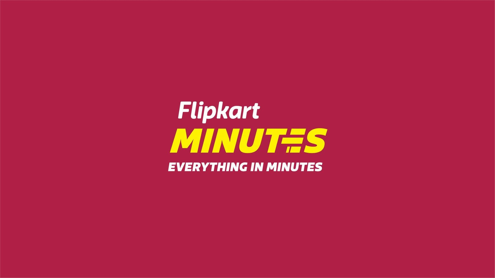
Flipkart MinutesNote: the fruit/grocery illustrations are low-resolution placeholders (some as small as 30–75px wide) supplied early in the project — flag to the design owner for higher-res replacements before production use. The quick-commerce app logos are each company's real trademarked assets, used here only for prototyping recognizability — confirm licensing/usage rights before shipping, or swap for neutral placeholders.
7. Files in this package
| File | Contents |
|---|---|
Home Widget Variations.dc.html | All widget explorations; variant 1a is locked (see section 2). Other variants (1b–1e) are earlier options, not in scope. |
Quick Commerce Popup Variations.dc.html | All pop-up explorations; variant 2b is locked (see section 3). Variants 2a/2c are earlier options, not in scope. |
Onboarding Flow.dc.html | The complete, locked 8-screen onboarding flow (see section 4). |
Things to Order - Style Guide.dc.html | Interactive design-token and component reference (see section 1). |
support.js | Runtime file the .dc.html files depend on — keep alongside them, do not edit. |
assets/ | All icons, illustrations, marks, logo, and third-party app logos referenced above. |
handoff_screens/ | Static screenshots embedded in this document. |